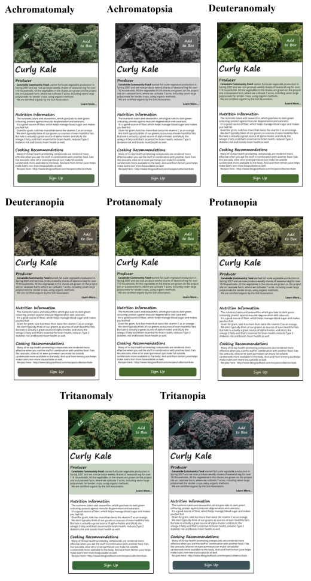

VegBox Accessibility

It's clear that the transparent green flag and button don't stand out well in some of them, so perhaps adding a large white border to those would help. Another important point is to ensure that none of the text is ever displayed as an image, to allow pinch-to-zoom to work properly on everything.
Product screen shown in high contrast / inverted / negative colours. Some assistive programs will also invert the colours of images, and some do not.
Product screen shown in black and white. In this one, it's clear that the price flag on the left does not show up well; either changing the colour or having it not be transparent may help. This will always depend on the contrast between the flag and the image underneath.